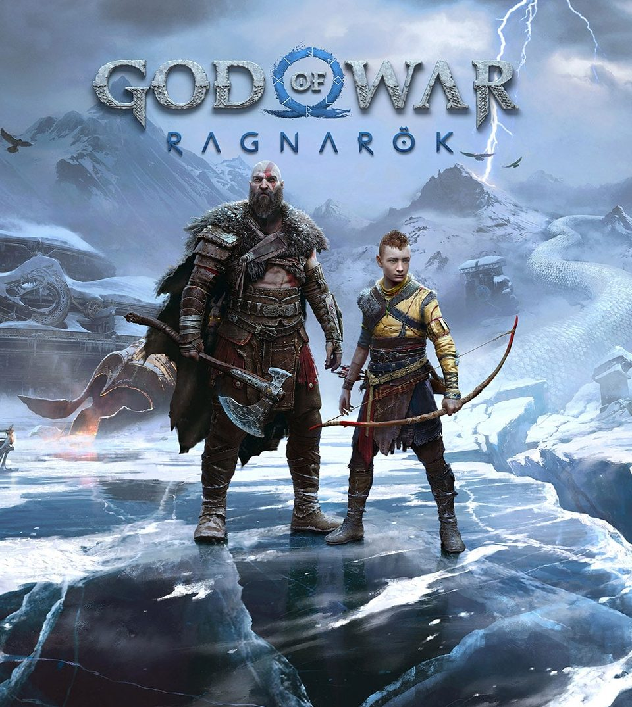

God Of War : Ragnarok
Rejoignez Kratos et Atreus dans leur voyage légendaire en quête de réponses avant le début du Ragnarök. Ensemble, père et fils devront prendre des risques tout au long de leur périple vers chacun des neuf royaumes.
Au cœur de paysages mythologiques à couper le souffle, ils affronteront de terribles ennemis, des dieux nordiques aux bêtes sauvages, alors qu'ils se préparent pour l'affrontement de leur vie.
Armé de ses fidèles armes de guerre, et notamment de la Hache Léviathan et des Lames du Chaos, Kratos va voir ses compétences guerrières mises à rude épreuve dans son combat pour protéger sa famille. Atreus et lui auront accès à une myriade de nouvelles capacités, laissant la possibilité à l'expression et à la fluidité lors des combats de cette épopée épique.
Et pendant ce temps, Asgard rassemble ses forces...
Ressentez cette aventure à travers les royaumes nordiques dans la paume de votre main grâce à l'immersion rendue possible par le retour haptique et les gâchettes adaptatives.
- Profitez pleinement de la beauté des mondes dans lesquels vous voyagez qui prennent vie grâce à une direction artistique incroyable et une attention au moindre détail.
- Avec l'audio 3D multidirectionnel, entendez les ennemis approcher quelle que soit la direction